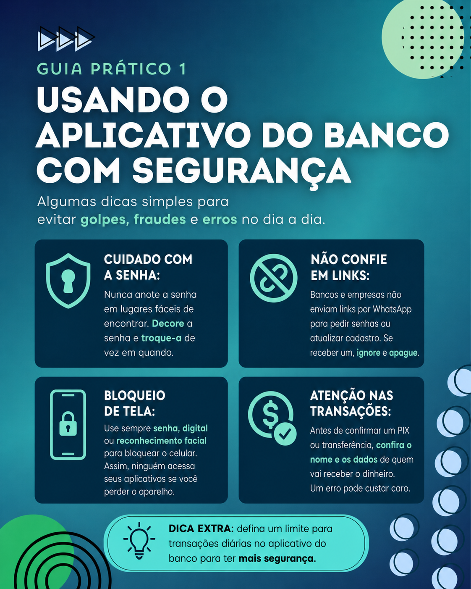
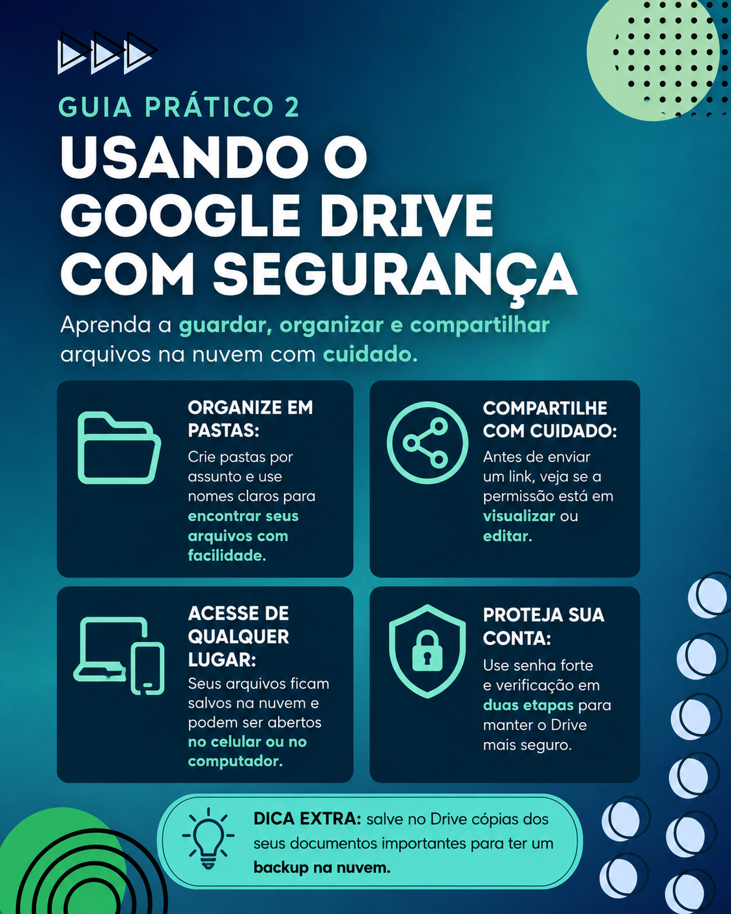
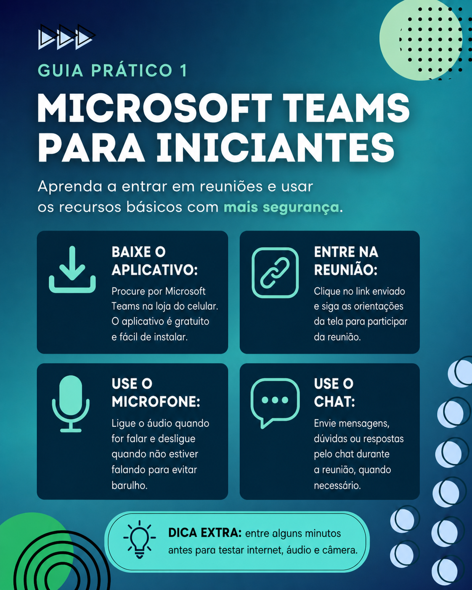
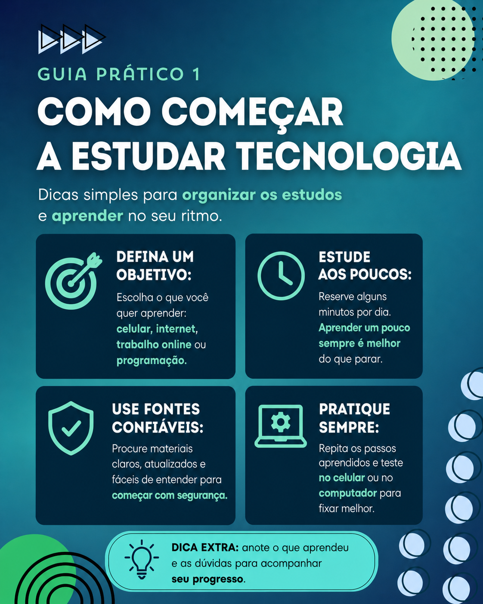

Uma ação de inclusão digital para uso seguro e consciente da tecnologia
Esta trilha foi desenvolvida para auxiliar moradores da comunidade no uso mais seguro, consciente e autônomo da tecnologia no dia a dia.
Os módulos foram organizados de forma progressiva. O participante pode acompanhar pelo celular, lendo os guias no próprio WhatsApp ou acessando o material complementar pelo link disponibilizado.
A trilha foi organizada em módulos progressivos, partindo de conteúdos básicos de segurança e uso do celular até orientações complementares para continuidade dos estudos.

Este módulo apresenta cuidados básicos para o uso seguro do celular, principalmente em aplicativos bancários e no WhatsApp.
O objetivo é ajudar o participante a reconhecer riscos comuns, evitar golpes e utilizar recursos simples de proteção no cotidiano.

Neste módulo, o participante aprende formas simples de proteger suas contas, criar senhas mais seguras e organizar documentos importantes.
O conteúdo também apresenta o Google Drive como ferramenta de armazenamento em nuvem, com orientações sobre backup e compartilhamento seguro.

Este módulo apresenta o Microsoft Teams de forma prática, mostrando como acessar reuniões online e utilizar recursos básicos da plataforma.
A proposta é facilitar a participação em reuniões, aulas, entrevistas e atendimentos virtuais com mais autonomia e segurança.

Este módulo é complementar e foi pensado para os participantes que desejam continuar aprendendo após os conteúdos principais da trilha.
O foco é apresentar caminhos simples para organizar os estudos, praticar tecnologia e conhecer os primeiros conceitos de programação.
Algumas recomendações essenciais para usar a tecnologia com mais segurança:
Este material foi desenvolvido como parte integrante da execução do projeto de extensão da UniCV. A proposta buscou contribuir para o desenvolvimento da cidadania digital por meio de orientações práticas, acessíveis e aplicáveis ao cotidiano dos participantes.
Engenharia de Dados | Desenvolvedor Frontend
E-mail: nato_rj@yahoo.com.br
UniCV - Centro Universitário Cidade Verde | 2026